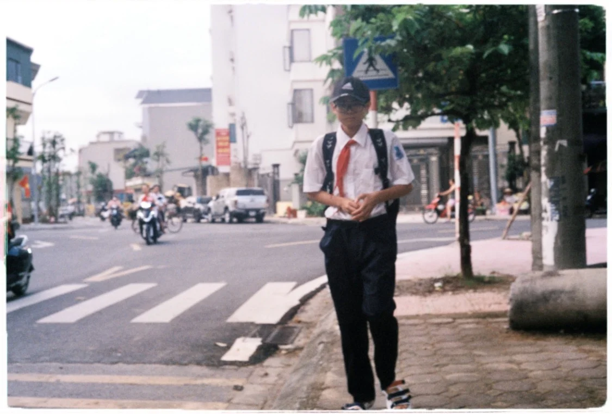
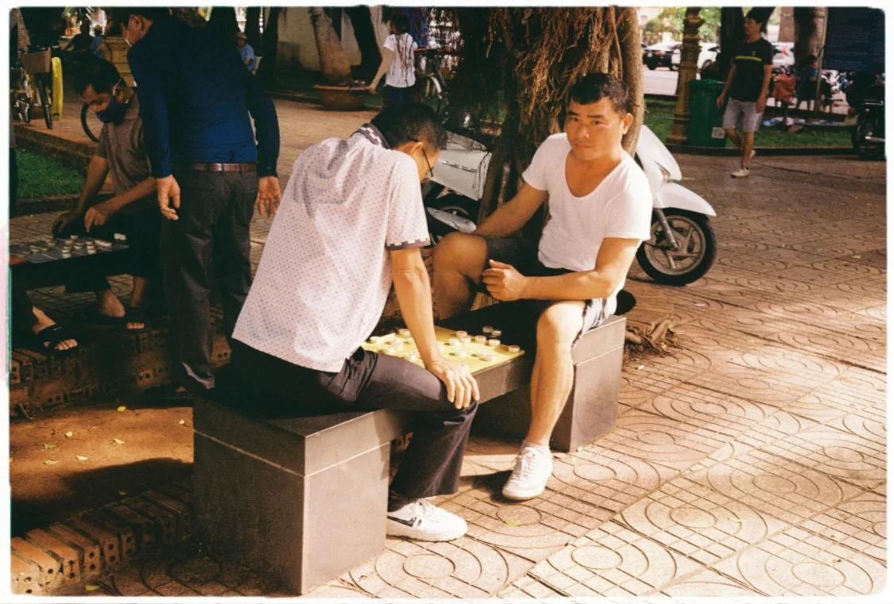
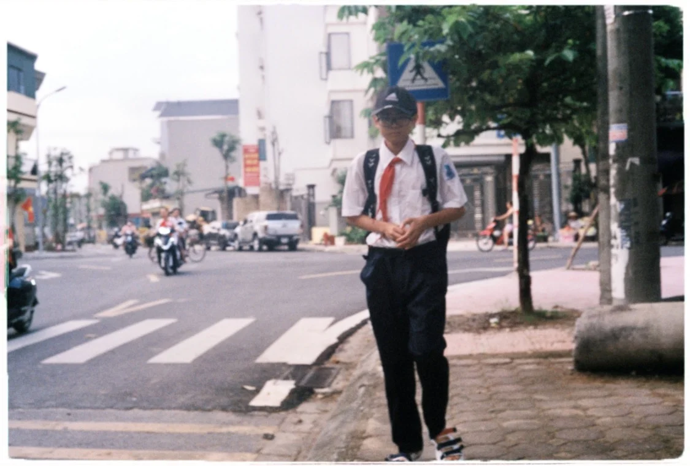
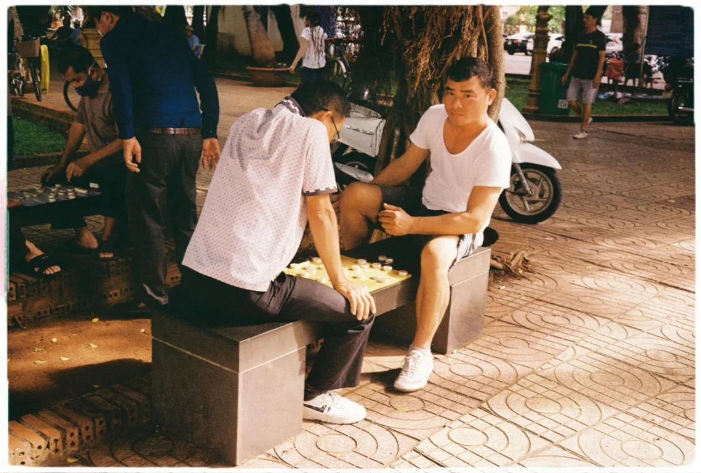

I capture moments
As time passes, photographs tend to become increasingly captivating. I have faith that in the years to come, when I revisit these pictures, I will develop a deeper appreciation for the stories they encapsulate. While we cannot revisit the past, photographs have the remarkable ability to transport us back in time, much like those cherished childhood photos.
My Porfolio
My photography journey began in 2017, and since then, I've embarked on several long-term self-projects, continuously evolving and refining my skills.
Visit my portfolio → 



My Resources
I've experimented with various photography tools, initially using smartphone lenses and ultimately embracing a film camera. I've discovered a sense of contentment with the film camera, despite the inherent graininess and halation it brings to my photos.
Check out my resources →